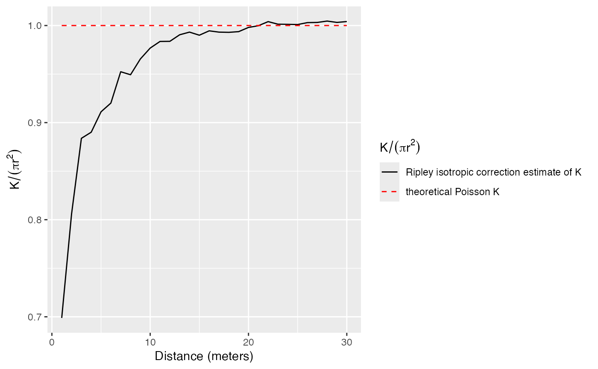
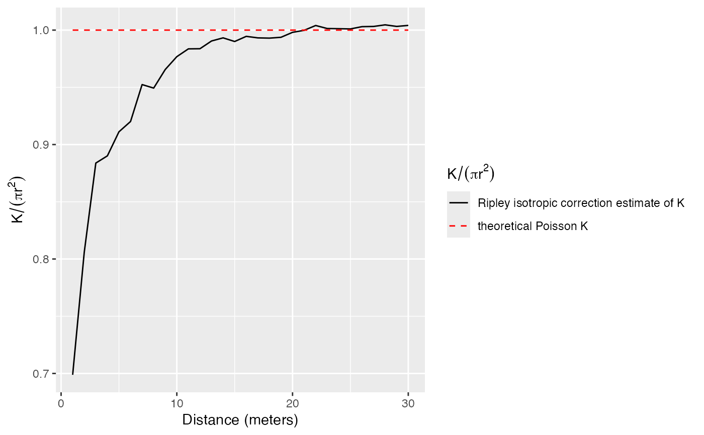

Estimation of the K function
Khat.RdEstimates the K function
Arguments
- X
A weighted, marked, planar point pattern (
wmppp.object).- r
A vector of distances. If
NULL, a sensible default value is chosen (512 intervals, from 0 to half the diameter of the window) following spatstat.- ReferenceType
One of the point types. Default is all point types.
- NeighborType
One of the point types. By default, the same as reference type.
- CheckArguments
Logical; if
TRUE, the function arguments are verified. Should be set toFALSEto save time in simulations for example, when the arguments have been checked elsewhere.
References
Ripley, B. D. (1976). The Foundations of Stochastic Geometry. Annals of Probability 4(6): 995-998.
Ripley, B. D. (1977). Modelling Spatial Patterns. Journal of the Royal Statistical Society B 39(2): 172-212.
Examples
data(paracou16)
autoplot(paracou16)
 # Calculate K
r <- 0:30
(Paracou <- Khat(paracou16, r))
#> Function value object (class ‘fv’)
#> for the function r -> K(r)
#> ................................................................
#> Math.label Description
#> r r distance argument r
#> theo K[pois](r) theoretical Poisson K(r)
#> iso hat(K)[iso](r) Ripley isotropic correction estimate of K(r)
#> ................................................................
#> Default plot formula: .~r
#> where “.” stands for ‘iso’, ‘theo’
#> Recommended range of argument r: [0, 30]
#> Available range of argument r: [0, 30]
#> Unit of length: 1 meter
# Plot (after normalization by pi.r^2)
autoplot(Paracou, ./(pi*r^2) ~ r)

# Calculate K
r <- 0:30
(Paracou <- Khat(paracou16, r))
#> Function value object (class ‘fv’)
#> for the function r -> K(r)
#> ................................................................
#> Math.label Description
#> r r distance argument r
#> theo K[pois](r) theoretical Poisson K(r)
#> iso hat(K)[iso](r) Ripley isotropic correction estimate of K(r)
#> ................................................................
#> Default plot formula: .~r
#> where “.” stands for ‘iso’, ‘theo’
#> Recommended range of argument r: [0, 30]
#> Available range of argument r: [0, 30]
#> Unit of length: 1 meter
# Plot (after normalization by pi.r^2)
autoplot(Paracou, ./(pi*r^2) ~ r)
